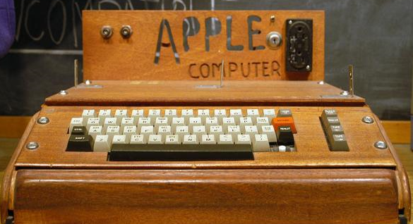
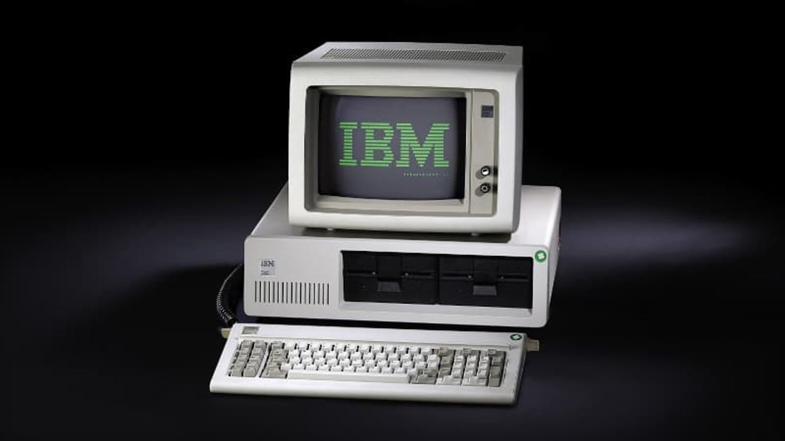

|  |  |
Nos anos 1970, a revolução dos computadores pessoais começou com máquinas como o Apple II, lançado em 1977, que se destacou por sua acessibilidade e interface gráfica amigável. Outro marco foi o IBM PC, lançado em 1981, que estabeleceu um padrão na indústria e incentivou a criação de uma vasta gama de software e hardware compatível.
Evolução dos sistemas operacionais para PCs
Os primeiros sistemas operacionais, como o DOS, eram limitados e baseados em linha de comando. Com o tempo, surgiram sistemas mais sofisticados, como o Windows, que trouxe uma interface gráfica intuitiva, tornando a computação mais acessível ao público geral. A evolução dos sistemas operacionais possibilitou um uso mais amplo e diverso dos computadores pessoais, integrando funções de multimídia, internet e redes sociais.
Impacto na vida cotidiana e no mercado
A popularização dos computadores pessoais transformou não apenas a maneira como trabalhamos e nos comunicamos, mas também impactou a educação, o entretenimento e a cultura. As empresas passaram a utilizar PCs para aumentar a produtividade, enquanto o mercado de tecnologia cresceu exponencialmente, gerando novas oportunidades de emprego e inovação. Hoje, os computadores pessoais são uma parte essencial da vida cotidiana, influenciando praticamente todos os aspectos da sociedade moderna.